Aventures D&D 5
Liste des aventures officielles parues et à paraître pour D&D 5. Notez que les prix indiqués sont ceux qui apparaissent sur le site de Wizards of the Coast, mais il est possible de trouver ces ouvrages bien moins chers, sur Amazon par exemple.
Journeys through the Radiant Citadel
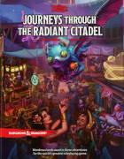
Sortie VO : 21 juin 2022 (49.95 $US)
Nbre de pages : ...
Aventures pour PJ niveaux 1 à 14 [Hors storyline]
Dans le style de Candlekeep Mysteries, Journeys through the Radiant Citadel propose 13 mini-aventures indépendantes les unes des autres avec leurs cartes respectives. Chaque aventure tourne autour de la Citadelle radiante, une cité flottante au cœur du plan éthéré et au centre de 15 civilisations différentes, qui permet de se connecter à différents endroits du multivers. Cette Citadelle radiante est conçue pour pouvoir s'insérer dans n'importe quel univers. L'ouvrage propose aussi des gazetteers et 11 nouvelles créatures.
Call of the Netherdeep
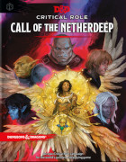
Sortie VO 15 mars 2022 (49.95 $US)
Nbre de pages : 224
Aventure pour PJ niveau 3 et qui les mènera au niveau 12.
Call of the Netherdeep est une campagne épique dans l'univers de l'actual play Critical Role. L'avidité des mortels a réveillé une entité puissante que l'on croyait détruite. Pendant des éons, ce puissant champion des dieux a été emprisonné dans les profondeurs les plus sombres d'Exandria. Languissant de désespoir, il appelle de nouveaux héros pour le sauver. L'aventure commence dans les Désolations de Xhorhas, mène sur le continent de Marquet, et de là dans un royaume de ténèbres et de corruption connu sous le nom de Netherdeep. Inclut de nouvelles créatures et objets magiques, ainsi qu'une carte de la ville d'Ank'Harel.
The Wild Beyond the Witchlight
Sortie VO 21 septembre 2021 (49.95 $US)
Nbre de pages : 252
Complément : aperçu par Rôliste TV
Aventure pour PJ niveau 1 et qui les mènera au niveau 8.
The Wild Beyond the Witchlight emmène les aventuriers de la fête foraine de Charme-Lumière à Prismeer, un domaine de la Féerie. Le livre est accompagné d'une carte qui montre la fête foraine d'un côté et Prismeer de l'autre. Vous pourrez ainsi pour la première fois explorer le plan de la Féerie dans une aventure officielle D&D. Il contient également deux nouveaux historiques (Feylost, un personnage originaire de la Féerie, et Witchlight Hand, un employé de la fête foraine) et deux nouvelles races (fairy et harengon). Sont également présents en guest stars des PNJ de D&D des années 80 comme Warduke, Strongheart et Kelek.
Candlekeep Mysteries
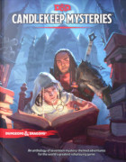Sortie VO : 16 mars 2021 (49.95 $US)
Nbre de pages : 224 (codename Microwave)
Complément : aperçu par Rôliste TV
Aventures pour PJ niveaux 1 à 16 [Hors storyline]
Candlekeep Mysteries propose 17 mini-aventures indépendantes les unes des autres et conçues pour des personnages de niveaux 1 à 16. Chaque aventure commence par la découverte d'un livre dans la Grande bibliothèque de Candlekeep, et chaque livre constitue la clé d'une porte derrière laquelle le danger et la gloire attendent les aventuriers. L'ouvrage contient aussi une carte de la Grande bibliothèque et une description détaillée de la forteresse de Candlekeep et de ses habitants, ainsi que de nouvelles créatures, PNJ et objets magiques.
Icewind Dale: Rime of the Frostmaiden
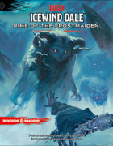Sortie VO : 15 septembre 2020 (49.95 $US)
Nbre de pages : 320 (codename Avalanche)
Complément : aperçu par Rôliste TV
Aventure pour PJ niveau 1 et qui les mènera au niveau 12.
Que signifiera la découverte des secrets qu'Aurile a si froidement conservé pour les habitants du Valbise, au nord des Royaumes Oubliés ? Pourrez-vous sauver Dix-Cités de la nuit éternelle de la Vierge de Glace ? L'ouvrage propose plusieurs aventures modulaires qui peuvent s’enchaîner pour former une campagne sur le thème de l'horreur et de la paranoïa. Ce livre présente également des règles pour jouer dans le froid (avalanches, survie, etc) et plus de 50 nouvelles créatures, dont plusieurs pour représenter une des formes de cette déesse.
Tyranny of Dragons
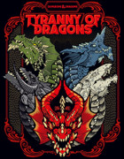Sortie VO : 22 octobre 2019 (49.95 $US)
Nbre de pages : 224
Aventure pour PJ niveau 1 et qui les mènera au niveau 16.
À l'occasion des 5 ans de D&D 5, WotC ressort en un seul ouvrage la première campagne parue pour cette édition, Tyranny of Dragons, originalement sortie en 2014 en deux volumes : Hoard of the Dragon Queen et The Rise of Tiamat. Outre une nouvelle couverture, l'ouvrage intègre les errata et les bonus online parus, ainsi qu'une nouvelle introduction, prenant ainsi en compte les remarques des joueurs depuis la première sortie de ces deux aventures.
Baldur's Gate: Descent into Avernus [ Descente en Averne ]
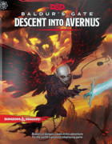Sortie VO : 17 septembre 2019 (49.95 $US)
Sortie VF : 19 juin 2020 (50.00 €)
Nbre de pages : 256
Complément : aperçu par Rôliste TV
Aventure pour PJ niveau 1 et qui les mènera au niveau 13.
L'aventure commence dans la cité de la Porte de Baldur, au sein des Royaumes Oubliés, et conduira les aventuriers jusqu'à Avernus, la première strate des Neuf enfers, au beau milieu de la Guerre de sang. Les personnages devront alors tenter de contrer les plans de Zariel, la céleste devenue archidiable. Avec au passage les Machines de guerre infernales façon Mad Max.
Ghosts of Saltmarsh
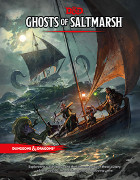Sortie VO : 21 mai 2019 (49.95 $US)
Nbre de pages : 256
Complément : aperçu par Rôliste TV
Aventures pour PJ niveau 1 et qui les mènera au niveau 12 [Hors storyline].
Recueils de 7 aventures façon Tales from the Yawning Portal, Ghosts of Saltmarsh adapte à D&D 5 des classiques d'AD&D et de Dungeon Magazine dont le thème tourne autour de la mer. Ces aventures sont Sinister Secret of Saltmarsh U1), Danger at Dunwater (U2), The Final Enemy (U3), Salvage Operation (DM #123), Isle of the Abbey (DM #34), Tammeraut’s Fate (DM #106) et The Styes (DM #121). L'ouvrage contient aussi une description de la ville portuaire de Saltmarsh, des règles spécifiques à l'environnement marin et de nouveaux monstres.
Waterdeep: Dungeon of the Mad Mage [ Le donjon du Mage dément ]
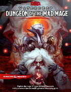Sortie VO : 20 novembre 2018 (49.95 $US)
Sortie VF : 14 juin 2019 (50.00 €)
Nbre de pages : 256 (codename Catacomb)
Aventure pour PJ niveau 5 et qui les mènera au niveau 20. Suite de l'aventure Dragon Heist.
Si Dragon Heist se joue dans un cadre très ouvert, Dungeon of the Mad Mage est un méga-donjon, avec rien de moins que les 23 niveaux d'Undermountain, le domaine d'Halaster Blackcloak situé sous Waterdeep, décrits en détail (dont Skullport au niveau 3). Chaque niveau est annoncé comme étant un mini-setting, avec suivant les cas des forêts, de l'eau ou des châteaux enchantés, et de très nombreuses créatures, potentielles alliées ou ennemis, car il ne faudra pas vouloir faire que tuer des monstres.
Waterdeep: Dragon Heist [ Le vol des dragons ]
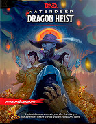Sortie VO : 18 septembre 2018 (49.95 $US)
Sortie VF : 19 avril 2019 (50.00 €)
Nbre de pages : 224 (codename Broadway)
Complément : aperçu par Rôliste TV
Aventure pour PJ niveau 1 et qui les mènera au niveau 5.
Le but de cette aventure urbaine à Waterdeep est de retrouver un trésor et de le garder à l'abri des convoitises. Le MD pourra choisir le big boss parmi 4 options (Xanathar, les Cassalanters, Jarlaxle et Manshoon), chacun d'eux changeant l'intrigue, ce qui permet de rejouer l'aventure plusieurs fois. Ce livre présente aussi la ville de Waterdeep (16 pages d'intro, 142 de scénario, 26 sur Waterdeep, 4 pages d'objets magiques et 28 de créatures et PNJ).
Tomb of Annihilation [ La tombe de l'Annihilation ]
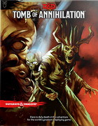Sortie VO : 19 septembre 2017 (49.95 $US)
Sortie VF : 01 juin 2018 (50.00 €)
Nbre de pages : 256 (codename Dust)
Aventure pour PJ niveau 1 et qui les mènera au niveau 11.
La « malédiction de la mort » est une maladie qui affecte tous ceux qui ont été ressuscités. Les victimes se dirigent lentement vers la mort qu'elles ont autrefois niée et, lorsqu'elles finissent par succomber, il est impossible de les ramener à la vie. Aucun savant n'est en mesure d'expliquer cette malédiction qui touche toute la région et dont la cause est en fait un artéfact situé quelque part au sud dans la péninsule mystérieuse de Chult, entourée de montagnes et étouffée de forêts tropicales où vivent encore de nombreux dinosaures.
Tales from the Yawning Portal [ Les contes du Portail béant ]
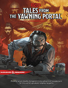Sortie VO : 4 avril 2017 (49.95 $US)
Sortie VF : 23 avril 2021 (50.00 €)
Nbre de pages : 248 (codename Labyrinth)
Complément : aperçu par Rôliste TV
Aventures pour PJ niveau 1 et qui les mènera au niveau 15 [Hors storyline].
Recueil de 7 aventures issues des plus célèbres et dangereux donjons parus depuis la création de D&D. Adaptées aux règles de D&D 5 et avec des plans actualisés. Ces aventures sont Sunless Citadel (niv 1), Forge of Fury (niv 3), Hidden Shrine of Tamoachan (niv 5), White Plume Mountain (niv 8), Dead in Thay (niv 9), Against the Giants (niv 11) et Tomb of Horrors (haut niveaux). Inclus des notes pour les situer dans les RO, Greyhawk, Dragonlance ou Eberron.
Storm King's Thunder
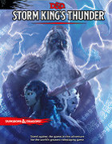Sortie VO : 6 septembre 2016 (49.95 $US)
Nbre de pages : 256 (codename Dagger)
Aventure pour PJ niveau 1 et qui les mènera au niveau 11.
Les géants sont sortis de leurs forteresses et menacent la civilisation comme jamais elle ne l'a été auparavant. Des géants des collines volent du grain et du bétail pendant que des géants des pierres rasent des villages. Des géants du feu embrigadent les peuples du désert alors que les bateaux des géants du givre pillent la Côte des Épées. Et les cités flottantes des insaisissables géants des nuages apparaissent au-dessus de Waterdeep et de la Porte de Baldur. Où est donc le roi Hekaton, ce géant des tempêtes chargé de maintenir l'ordre parmi les géants ?
Curse of Strahd [ La malédiction de Strahd ]
Sortie VO : 15 mars 2016 (49.95 $US)
Sortie VF : 30 novembre 2018 (50.00 €)
Nbre de pages : 224 (codename Cloak)
Aventure pour PJ niveau 1 et qui les mènera au niveau 10.
Sous un ciel d'orages, la silhouette du comte vampire Strahd von Zarovich se détache des vieux murs de château Ravenloft. Les grondements du tonnerre s'abattent sur les flèches du château et le vent hurlant redouble d'intensité. En contrebas, vers le village de Barovie, un groupe d'aventuriers vient d'entrer dans son domaine. Strahd libère alors un sourire, son plan se déroule comme prévu : il savait qu'ils allaient venir, il sait pourquoi ils sont venus. Le maître de château Ravenloft reçoit à dîner ce soir, et vous êtes ses invités.
Out of the Abyss
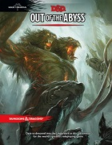Sortie VO : 15 septembre 2015 (49.95 $US)
Nbre de pages : 256
Aventure pour PJ niveau 1 et qui les mènera au niveau 15.
L'Outreterre est un endroit souterrain fantastique, un immense labyrinthe où règne la peur. C'est le foyer d'horribles monstres qui n'ont jamais vu la lumière du jour. Et c'est de là que l'elfe noir Gromph Baenre, archimage de Menzoberranzan, lance un sort destiné à déclencher une énergie magique qui va se répandre dans tout l'Outreterre et ouvrir des portails vers les Abysses démoniaques. Des monstruosités menacent maintenant les Royaumes dans leurs fondements même. Arrêtez la folie avant qu'elle ne vous consomme !
Princes of the Apocalypse
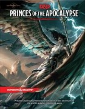Sortie VO : 7 avril 2015 (49.95 $US)
Nbre de pages : 256
Lien de téléchargement : supplément gratuit
Aventure pour PJ niveau 1 et qui les mènera au niveau 15.
Appelés par l'Œil Élémentaire Ancestral, quatre prophètes corrompus sortent de l'anonymat pour revendiquer de puissantes armes liées à la puissance des princes élémentaires. Avec l'aide de cultistes et de créatures, ils vont bâtir quatre temples élémentaires mortels. Il revient à des aventuriers de découvrir où se trouve le vrai pouvoir de ces prophètes, et de les mettre hors d’état de nuire avant qu'ils n'effacent les Royaumes de la carte.
The Rise of Tiamat
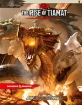Sortie VO : 4 novembre 2014 (29.95 $US)
Nbre de pages : 96
Lien de téléchargement : supplément gratuit
Aventure pour PJ niveau 8 et qui les mènera au niveau 15. Suite de l'aventure Hoard of the Dragon Queen.
Le Culte du Dragon continue sa croisade pour ramener Tiamat dans les Royaumes, et la situation est maintenant dramatique. La bataille devient aussi politique lorsque des occasions de rallier de nouveaux alliés se présentent. De Waterdeep au Thay, la course contre la montre face au mal est engagée. Il faut réussir, ou succomber sous l'oppression de la tyrannie draconique. Que le bien gagne ou perde, rien ne sera plus jamais comme avant.
Hoard of the Dragon Queen
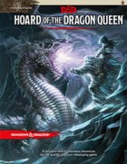Sortie VO : 19 août 2014 (29.95 $US)
Nbre de pages : 96
Lien de téléchargement : supplément gratuit
Aventure pour PJ niveau 1 et qui les mènera au niveau 8.
Dans sa lutte pour le pouvoir, le Culte du Dragon, allié aux dragons et aux Magiciens rouges du Thay, cherche à faire sortir Tiamat de sa prison des Neuf enfers pour la ramener sur Faerûn. Pour cela ils ratissent les villes les unes après les autres, détruisant ceux qui s'opposent à eux et recueillant trésors et richesses pour leur terrible reine. La menace est immense ; jamais auparavant la nécessité de trouver des héros n'a été aussi importante.
Aventures D&D Next
Ces aventures sont sorties durant la phase de playtest des règles, avant la sortie de la version définitive de celles-ci donc.
Dead in Thay
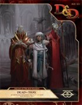Sortie VO : 29 avril 2014 (17.99 $US)
Nbre de pages : PDF
Szass Tam, le seigneur liche du Thay, menace de dominer l'ensemble de la Côte des Épées avec l'aide de ses Magiciens rouges. La Porte de Sang, un immense portail magique, doit être détruit pour l'arrêter. Cette aventure de niveau 6 à 8, directement liée à la précédente (Scourge of the Sword Coast), est également présentée au format PDF sur 75 pages, le reste étant le bestiaire pour D&D Next. Dead in Thay est, selon l'éditeur, un hommage aux Tombeau des Horreurs et autres donjons mortels. Le plan du donjon, impressionnant, est d'ailleurs disponible dans la section Cartes de ce site.
Scourge of the Sword Coast
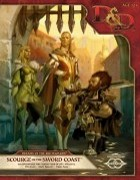Sortie VO : 4 février 2014 (17.99 $US)
Nbre de pages : PDF
Changement de format, cette aventure étant au format PDF. Un seul livret présente donc sur 64 pages une aventure pour niveaux 2 à 4 où les aventuriers auront à résoudre plusieurs mystères sur cinq sites autour de la ville de Daggerford, qui accueille de nombreux réfugiés suite à d'incessants raids de gobelins, gnolls et orcs dans la région. Cette fois tous les bloc de stat des monstres pour D&D Next sont présents. C'est encore une fois un scénario très ouvert qui permet d’enchaîner les donjons dans n'importe quel ordre, et ce troisième opus semble confirmer la volonté de Wizards of the Coast de sortir des scénarios de qualité pour D&D Next.
Legacy of the Crystal Shard
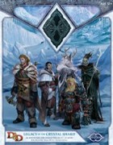Sortie VO : 19 novembre 2013 (34.95 $US)
Nbre de pages : 64+32
Même format que précédemment. Un premier livret de 64 pages décrit le Valbise des Royaumes oubliés et ses habitants. Un deuxième livret de 32 pages présente une aventure pour niveaux 1 à 3 (sans caractéristique technique) où les aventuriers devront aider les gens du Nord, en 1485, à affronter plusieurs problèmes, dont ce qui semble être le plus grand hiver depuis des siècles. Mais déjà les forces du mal convergent vers Dix-Cités. Là aussi, les forces face aux aventuriers semblent plus fortes qu'eux. Les joueurs pourront résoudre certains problèmes, mais pas tous.
Murder in Baldur's Gate
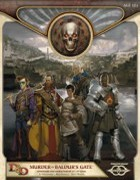Sortie VO : 20 août 2013 (34.95 $US)
Nbre de pages : 64+32
Un premier livret de 64 pages décrit la cité de la Porte de Baldur dans les Royaumes oubliés (histoire, géographie, économie, politique) et ses habitants, peu après 1479. Un deuxième livret de 32 pages présente une aventure pour niveaux 1 à 3 (sans caractéristique technique) où les aventuriers devront défendre la ville d'un mal ancien soit disant disparu depuis longtemps. Le scénario semble très ouvert (type bac à sable, c'est à dire pas linéaire du tout). Les aventuriers feront face à certaines forces trop fortes pour eux, ce qui les obligera à faire de nombreux choix et à apprendre à ne pas toujours gagner, ce qui peut rebuter certains joueurs.